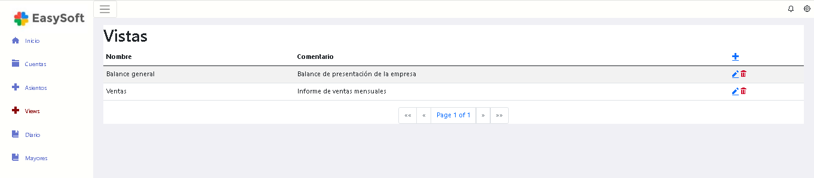

Las Vistas son modelos que permiten desplegar la información contable agrupada de diferentes maneras, según el tipo de informe a emitir. Se utilizan en la emisión de:
Al ingresar a la pantalla podes ver las vistas ya definidas, modificarlas, eliminarlas o crear otras nuevas.
Podes definir todas las vistas que necesites. Al definir una vista tenés que indicar los títulos y subtítulos (anidados jerárquicamente) del informe a los cuales vas a asociar las cuentas. Se pueden incluir algunas o todas las cuentas del Plan de Cuentas.
En este video te mostramos en forma práctica como definir una vista.
ExactaWeb.Client v:1.0.0.0 - Powered by